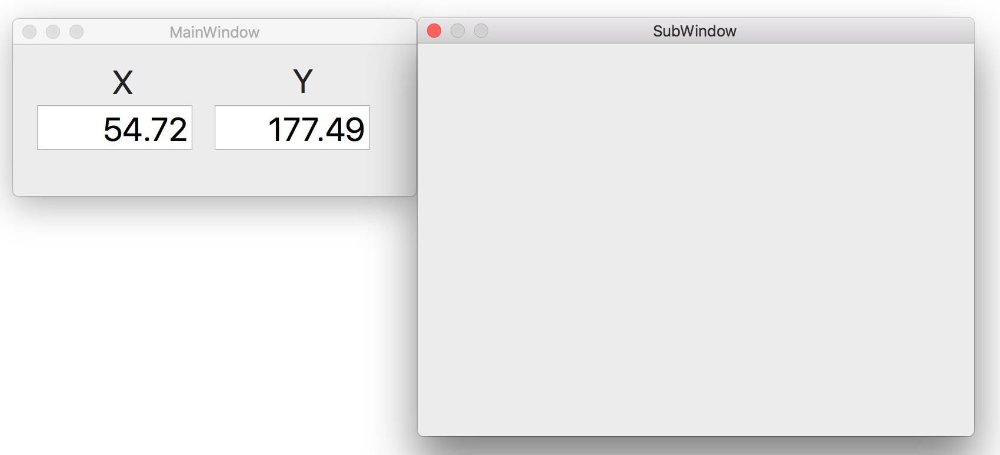
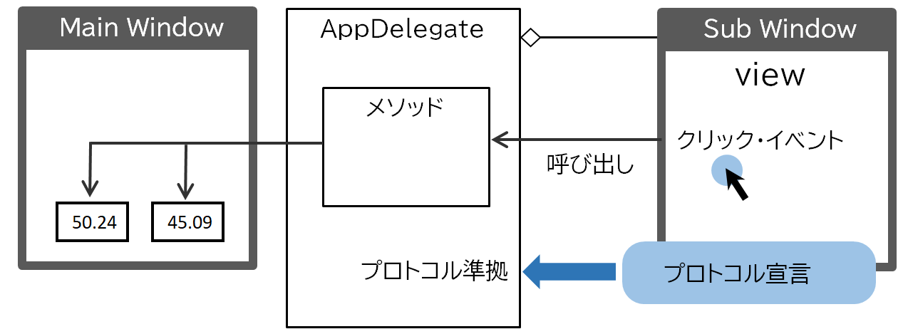

<DOCTYPE HTML>
<html id="mainhtml">
<head>
  <meta http-equiv="Content-Type" content="text/html; charset=utf-8">
  <title>プロトコルによるデリゲート</title>
    <link rel="stylesheet" type="text/css" href="/lib/document.css">
</head>
<body id="mainbody">
<!-- ↓↓↓↓↓↓↓↓↓↓↓ -->
<script type="text/javascript" src="/lib/funcs2.js"></script>
<!-- ↑↑↑↑↑↑↑↑↑↑ -->
<div id="content">
<h2 class="lm100 tm20 bm0">プロトコルによるデリゲート</h2>
<!--div class="lm100 tm0" style="width:550px; border-top:solid 1px #909090;"></div -->

<h3 class="lm100 tm10 rm60 bm0">
処理
</h3>
<div class="lm100 tm0 rm60">
サブウィンドウの上でマウスをクリックすると、クリックした位置の座標（X, Y）を即時にメインウィンドウのテキストフィールドに表示する。サブウィンドウが座標を表示する処理をメインウィンドウ側にデリゲート（移譲）する。
</div>
<!-- 画像 -->
<a href="/lib/HTMLofVideo.html?filename=/data/B14/protocol.mp4&title=プロトコル&width=800" target="_new">
</a>
<div class="lm110 tm5 rm60">
画像をクリックすると動画が表示されます。
</div>

<h3 class="lm100 tm30 rm60 bm0">
システム関連図
</h3>

<!-- 画像 -->
<a href="/lib/HTMLofImage.html?filename=/data/B14/delegate.png&title=プロトコル&width=700" target="_new">
</a>
<h3 class="lm100 tm30 rm60 bm0">
デリゲートを移譲する側：サブウィンドウのビュー    
</h3>
<!-- ソースコード -->
<iframe class="lm100 tm5" src="/lib/HTMLofText.html?filename=/data/B14/protocol.txt" width="550" height="90"></iframe>
<!-- ソースコード -->
<iframe class="lm100 tm10" src="/lib/HTMLofText.html?filename=/data/B14/UAView.txt" width="550" height="330"></iframe>
<h3 class="lm100 tm20 rm60 bm0">
デリゲートを移譲される側：AppDelegateクラス
</h3>
<!-- ソースコード -->
<iframe class="lm100 tm5" src="/lib/HTMLofText.html?filename=/data/B14/AppDelegate.txt" width="550" height="520"></iframe>
<div class="bp40"></div><!-- 空白行 -->
<!----------------------------------------------->
</div><!-- end of content -->
<footer id="mainfooter">
<div class="tp10 bm10 bp10 textright"> <span class="rm500 font80"><a href="/lib/index2.html">メニューに戻る</a></span><span class="rm20 font80"><a href="#mainheader">TOPに戻る</a></span></div>
</footer>
<script type="text/javascript" src="/lib/access/access2.js"></script></body>
</html>

